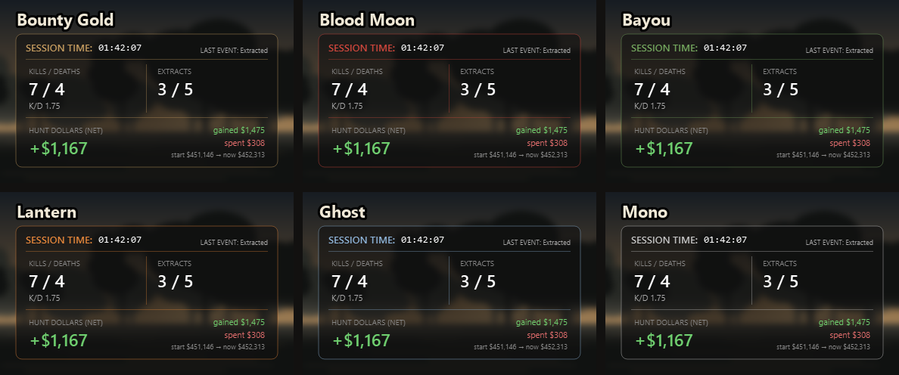
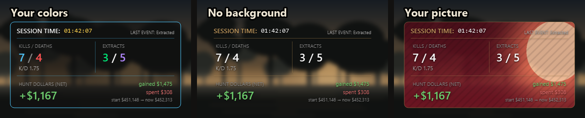

Your whole session at a glance
Point it at your Hunt folder once and it counts from then on. No account, nothing to set up mid-match.
Kills, deaths, K/D
Read from your Mission Summary after every match, about two seconds in.
Extracts
Matches you made it out of, out of matches played. Revived and extracted still counts.
Hunt Dollars, net
Gained, spent and your real total from your lobby balance, with your starting balance shown so you can check it.
History and charts
Every session saved on your PC. K/D, kills per match and money over 1, 3, 7 or 30 days, or all time.
Stream it with OBS
Your stats as an OBS Browser Source, on one PC or a separate streaming PC. Built-in setup guide.
Make it yours
Themes, your own color for every number, no background or your own picture. Hide what you don't need.
Make it look the way you want
Six ready-made themes, or go further: pick a color for every number, turn the border off, drop the background entirely, or put your own picture behind your stats and move it into place.


Built for streaming
Show your session on stream without capturing the game window.
- OBS Browser Source: paste one address into OBS. See-through, updates every second.
- One PC or two: works on a separate streaming PC on your home network.
- Private by default: off until you turn it on, and the address has a random key. Showed it on stream? Make a new one in one click.
- Step-by-step OBS guide built into the app.
It reads, it never touches
It only reads what Hunt already writes to your disk and shows on your screen.
Follows Hunt's log file
Match starts, deaths and match ends come from the log Hunt writes while you play.
Reads the Mission Summary
Kills and Hunt Dollars are read with Windows' built-in text recognition. Screens are read in memory and thrown away; nothing is saved or sent.
Checks your lobby balance
Your balance between matches gives your true net, including what you spent, and fills in anything a skipped summary missed.
Free vs Full
Use the free version as long as you like. The Full version unlocks everything.
Free
- Kills, deaths, extracts, Hunt Dollars
- Move, resize and adjust stats
- Undo last match
- Overlay shows a "Free version" watermark
Full Recommended
- Everything in Free, with no watermark
- OBS setup: Browser Source for one or two PCs, plus a step-by-step guide
- Session history and charts, with Reset all data
- Hide info: hide Session Time, K/D, Extracts or Hunt Dollars
- Make it yours: color themes, your own color for every number, no background or your own picture
- Reset buttons
- Every future update, signed and installed in one click
- Cancel anytime; it keeps working to the end of your billing period
Lifetime
- Everything in Full, for good
- Every future update included
- No monthly payments, nothing to cancel
- Already on monthly? Upgrade from the License window
Until the Full version goes on sale, every download includes all features. Payments are handled by our reseller, Lemon Squeezy, who also handles sales tax. See the refund policy.
Questions
Is it safe to use with Easy Anti-Cheat?
Taketh Tracker never opens the game's process, doesn't read or change game memory, inject anything, or draw inside the game. The overlay is an ordinary window on top, and it reads Hunt's log file and the screen. We can't speak for Crytek or Easy Anti-Cheat; only they decide what their anti-cheat allows.
What do I need?
Windows 10 or 11, Hunt in Borderless (windowed fullscreen) on your main monitor, the game in English, and ideally a 16:9 screen (1080p, 1440p or 4K).
Does it collect my data?
No. Your stats stay on your PC. Online, it only checks GitHub for updates (and, for the Full version, checks your license with Lemon Squeezy). See the privacy policy.
I skip the Mission Summary fast. Will it miss my money?
No. Kills are read about 2 seconds in. If the Hunt Dollars weren't on screen yet, they're filled in from your lobby balance a few seconds after you get back to the lobby, and the card shows your starting and current balance so you can check the total.
Why does Windows warn me when I install it?
The installer isn't signed with a paid Windows certificate yet. Only download it from the official GitHub releases page, then choose More info, then Run anyway. Updates are signed by us, and the app refuses fakes.
Is this the same app as Hunt Tracker?
Yes. Hunt Tracker was renamed Taketh Tracker ("Hunt giveth, Hunt taketh"). Updating keeps all your stats, history and settings, and the old shortcuts are replaced with new ones.
Something's wrong. Where do I get help?
Open an issue on GitHub. For security problems, use private reporting. About an order, reply to your Lemon Squeezy receipt email.